X25 (2025) — English translation
Let's calculate the angular size of the side of the square. Since $a\ll L$, then: $$\beta \approx \cfrac{a}{L}.$$
Similar to the previous point: $$\beta \approx \cfrac{a}{L}.$$
The image will look like a square with rounded corners. The straight part of the side has length $a$, the radius of curvature of the corners is $r = \cfrac{\alpha L}{2} = 4.4~ cm.$
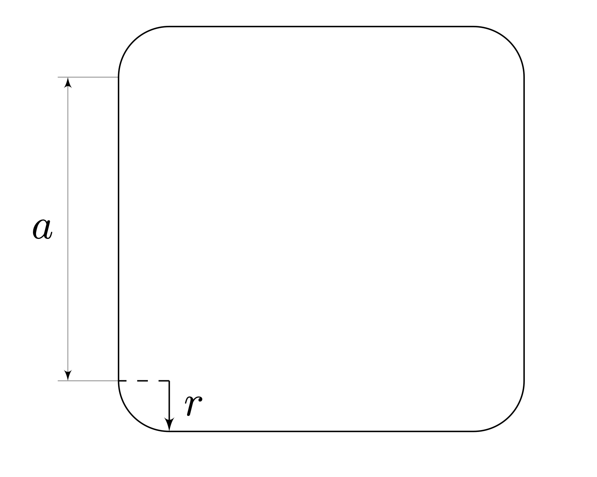
In this case, the image will differ slightly from a circle with diameter $D = \alpha L = 8.7~ cm$.
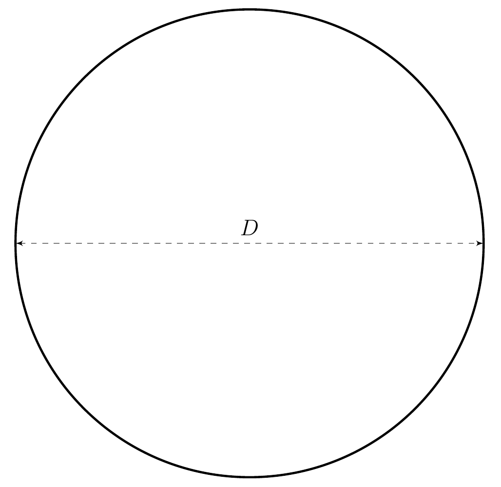
From the similarity of triangles $AOB$ and $A'OB'$: $$\cfrac{a}{h}=\cfrac{L}{l_0+vt}.$$
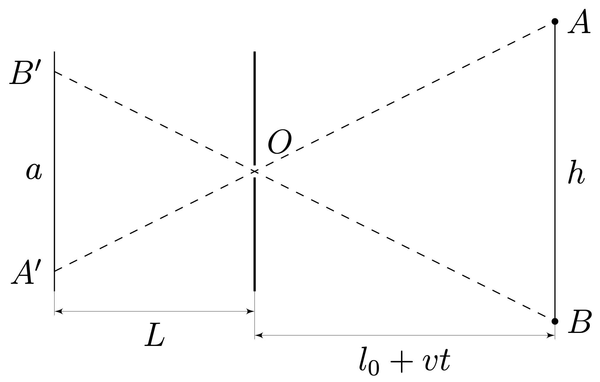
The angular sizes of the Sun and a person are of the same order, so we can assume that all the rays are paraxial and the sizes in the photograph are proportional to the angular sizes. From the figure, the ratio of the angular sizes of a person and the Sun: $$\cfrac{h/l}{\alpha} = \cfrac{75 mm}{30 mm}=\cfrac{5}{2}.$$For оценки возьмём $h = 2 m$: $$l = \cfrac{2h}{5\alpha} \approx 90~\mathrm{m}.$$
Note that $A$, $B$, $O$ and the image of the segment lie in the same plane, the image $AB$ lies entirely on the straight line - the intersection of this plane with the plane of the screen. If $A$ and $B$ are in front of the front plane of the camera, then the image will be a line segment.
If $A$ and $B$ are on different sides of the front plane of the camera, then the image will be a ray.
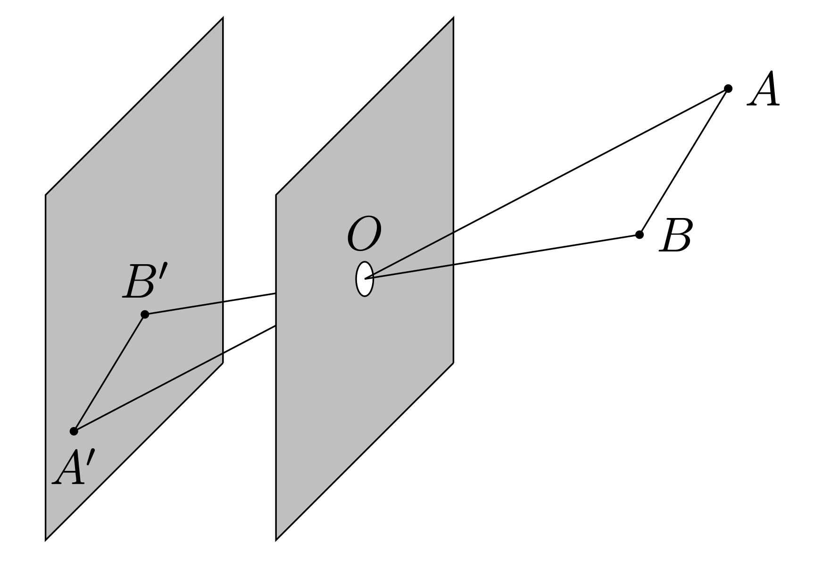
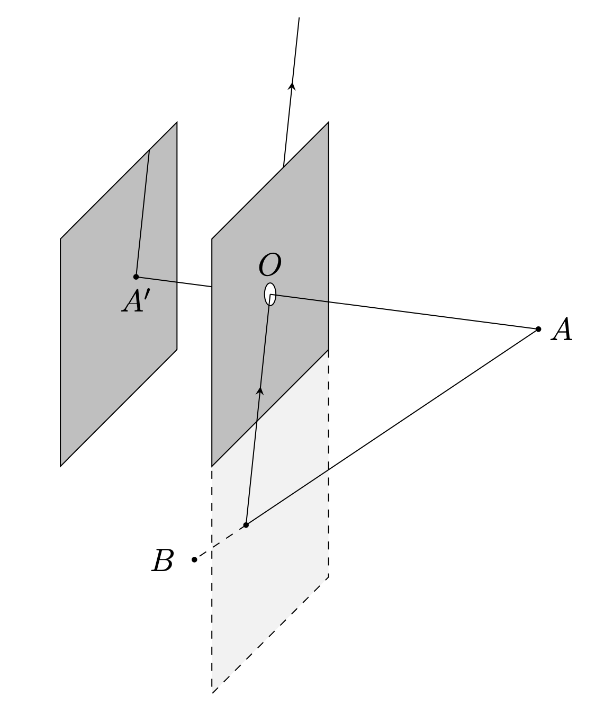
Some part of the flag will not be in the photo if it lies on the opposite side of the front plane of the camera. Let's consider what is happening in the projection onto a plane perpendicular to the plane of the flag and the front plane of the camera.
In order for the flag to be visible, it is always necessary that for any position of the point $E$ ($E$ is the center of the flag), the following must be fulfilled: $EC < EF$. The length of $EC$ is constant: $$EC = \cfrac{a\sqrt2}{2}.$$$EF$ is the hypotenuse of the right triangle $EOF$, therefore $EF = 2l_{m}$, where $l_{m}$ is the length of the median of this triangle from the vertex $O$. The height of $EOF$ from vertex $O$ is $l_0$, and it cannot be greater than $l_{m}$: $$l_0 \leqslant l_m = \cfrac{EF}{2}.$$That is $EF \geqslant 2l_0$ and equality выполняется, когда рассматриваемый треangleьник equalsбедренный. Thus, чтобы флаг всегда было видно, необходимо: $$\cfrac{a}{\sqrt2}<2l_0.$$
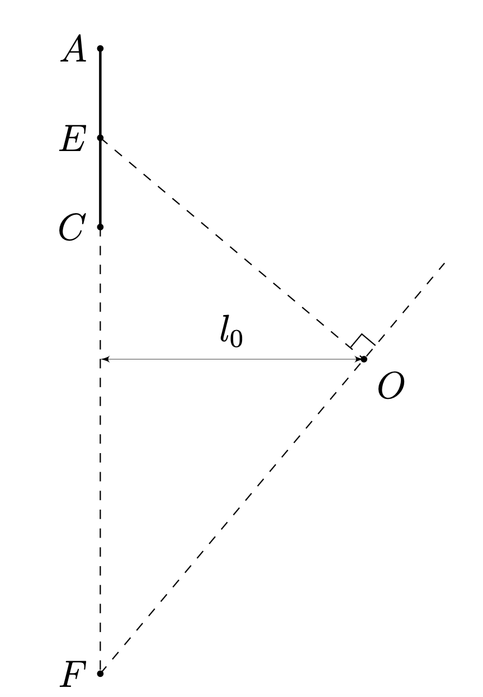
The distance from the origin of coordinates $XY$ to the image of a point is determined by the tangent of the angle between the camera axis and the direction to this point (for points $A$, $B$, $C$ and $D$ we denote these angles $\theta_A$, $\theta_B$, $\theta_C$ and $\theta_D$, respectively). We can find the coordinates $x$, $y$ and $z$ of these points and get: $$\tan \theta_B = \tan\theta_D = \cfrac{\left|x_B\right|}{z_B} = \cfrac{a/\sqrt2}{\sqrt{l_0^2+v^2t^2}} = \cfrac{a}{\sqrt{2\left(l_0^2+v^2t^2\right)}};$$$$\tan\theta_A = \cfrac{\left|y_A\right|}{z_A} = \cfrac{\cfrac{a}{\sqrt2}\sin\xi}{\sqrt{l_0^2+v^2t^2}+\cfrac{a}{\sqrt2}\cos\xi};$$$$\tan\theta_C =\cfrac{\left|y_C\right|}{z_C}= \cfrac{\cfrac{a}{\sqrt2}\sin\xi}{\sqrt{l_0^2+v^2t^2}-\cfrac{a}{\sqrt2}\cos\xi}.$$At the same time можем выtimesandть $\xi$ via/through данные величины: $$\cos\xi = \cfrac{vt}{\sqrt{l_0^2+v^2t^2}} \qquad и\qquad \sin\xi = \cfrac{l_0}{\sqrt{l_0^2+v^2t^2}}.$$We get the final answer:
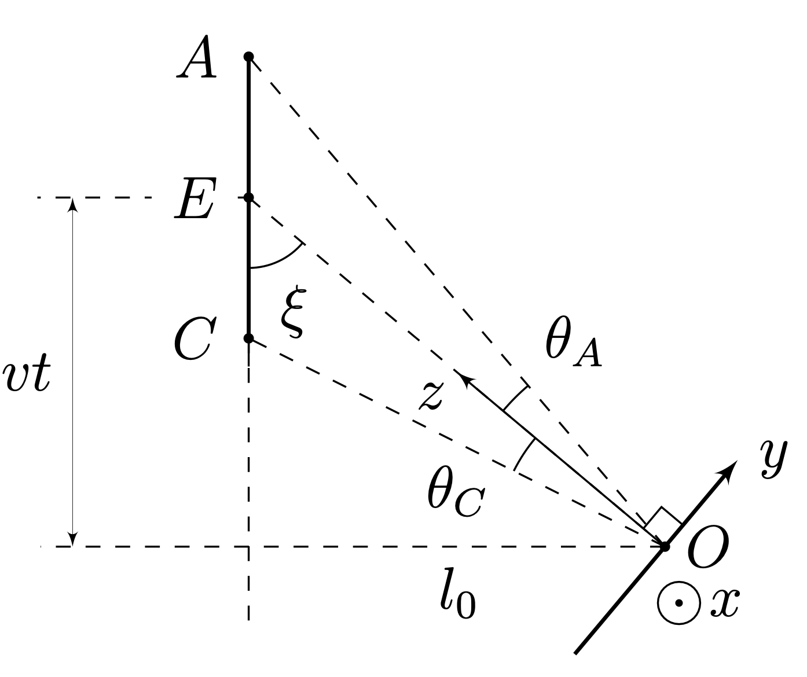
From a photograph we can find the coordinates of the images of the vertices on an unknown scale, that is, we can find the tangents of the angles $\theta_A$, $\theta_B$, $\theta_C$ and $\theta_D$, up to an unknown factor.
For convenience, we will use $\xi$ in intermediate calculations. $$\tan \theta_B = \cfrac{a/\sqrt2}{\sqrt{l_0^2+v^2t^2}} = \cfrac{\cfrac{a}{\sqrt2}\sin\xi}{l_0} = 8k$$$$\tan\theta_A = \cfrac{\cfrac{a}{\sqrt2}\sin\xi}{\cfrac{l_0}{\sin\xi}+\cfrac{a}{\sqrt2}\cos\xi} = 3.6k$$$$\tan\theta_C = \cfrac{\cfrac{a}{\sqrt2}\sin\xi}{\cfrac{l_0}{\sin\xi}-\cfrac{a}{\sqrt2}\cos\xi} = 7k$$Dividing $\tan\theta_B$ на $\tan\theta_A$ and $\tan\t heta_C$. $$\cfrac{8}{3.6} = \cfrac{1}{\sin\xi}+\cfrac{a}{\sqrt2 l_0}\cos\xi$$$$\cfrac{8}{7} = \cfrac{1}{\sin\xi}-\cfrac{a}{\sqrt2 l_0}\cos\xi$$Сложив, we get value $\xi$. $$\cfrac{8}{7}+\cfrac{8}{3.6} = \cfrac{2}{\sin\xi}$$$$\sin\xi = \cfrac{l_0}{\sqrt{l_0^2+v^2t^2}} = 0.594$$$$vt = 4.06~\mathrm{m}$$We get answer:
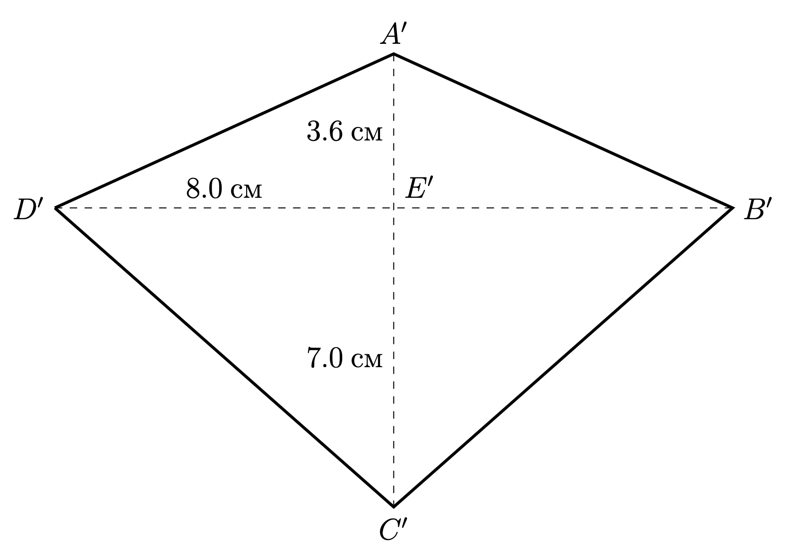
The coordinate $y$ of the horizon points does not depend on $\varphi$ and it is equal to: $$y = -\cfrac{R}{\cos\theta}+R\cos\theta.$$Координаты $x$ and $z$ equal: $$x = R\sin\theta\sin\varphi;$$$$z = R\sin\theta\cos\varphi.$$
Let's consider what is happening in the projection onto $yz$.
From the similarity of triangles we get: $$\cfrac{Y}{y} = \cfrac{L}{z}.$$Similarly в проекции на $xz$ we get: $$\cfrac{X}{x} = \cfrac{L}{z}.$$
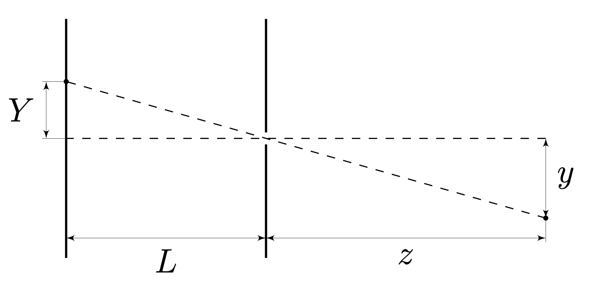
Note: The following expression may be useful: $$\cfrac{1}{\cos^2\varphi} = 1+\tan^2\varphi.$$
Using the results obtained earlier, we express $X$ and $Y$ in terms of $L$, $\theta$ and $\varphi$. $$X = \cfrac{xL}{z} = L\tan\varphi$$$$Y = \cfrac{yL}{z} = L\cfrac{-\cfrac{1}{\cos\theta}+\cos\theta}{\sin\theta\cos\varphi}=-\cfrac{L\tan\theta}{\cos\varphi}$$Raising to the power $Y$ в квадрат and let us express via/through $X$: $$Y^2 = \cfrac{L^2\tan^2\theta}{\cos^2\varphi} = L^2\tan^2\theta+X^2\tan^2\theta.$$$$\cfrac{Y^2}{\left(L\tan\theta\right)^2} - \cfrac{X^2}{L^2} = 1$$
Let's use the formula from the previous paragraph of the problem. Let's substitute two points from the graph into it: $(0, 7k)$ and $(40k,10k)$, where $k$ is an unknown factor responsible for the scale. $$\cfrac{\left(7k\right)^2}{A^2}=1=\cfrac{\left(10k\right)^2}{A^2}-\cfrac{\left(40k\right)^2}{B^2}$$$$\tan^2\theta = \cfrac{A^2}{B^2} = \cfrac{10^2-7^2}{40^2}$$Let us find $\theta$ and substituting в expression via/through $h$ and $R$. $$\theta = 10.1^\circ$$$$\cfrac{h}{R} = \cfrac{1}{\cos{\theta}} - 1$$
The Earth's atmosphere is spherically symmetrical, therefore, when a beam moves in the atmosphere, the expression $n(r)\cdot r\cdot\cos\theta(r)$ is preserved, where $r$ is the distance to the center of the earth, $n(r)$ is the refractive index of air at this point, $\theta(r)$ is the angle of direction of the ray with the horizon. Let's substitute the values at the surface of the earth and at the height $h$. $$n_0R=\left(R+h\right)\cos\theta'$$
Let's write a new expression for $\theta$ and equate it to the old one, since the angle $\theta$ is determined from the graph and its value in the calculations will be the same. $$\cfrac{n_0 R}{R+h+\Delta h}=\cfrac{R}{R+h}$$$$\left(R+h\right)\left(n_0-1\right)=\Delta h$$
The horizon is completely visible when the entire cone of rays from the horizon lies on one side of the front plane of the camera. This condition is satisfied at $2\psi<90^\circ$. Moreover, $\theta = 90^\circ-\psi$, so the condition on $\theta$: $$\theta > 45^\circ.$$Это equalsсильно следующему неequalsству: $$R+h > \sqrt2 R.$$
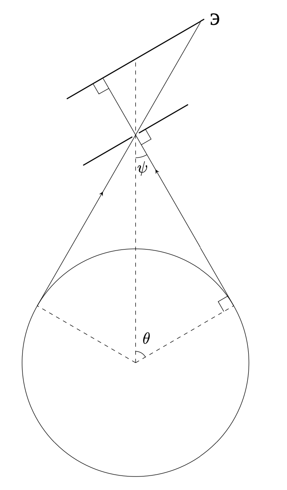
Note: The angle $\theta$ shown in the figure may be useful for intermediate calculations.
Let's consider the section of the horizon circle by the front plane of the camera, when the horizon is not completely visible.
Note that the required value is: $$\eta = \cfrac{2\pi - 2\gamma}{2\pi} = 1-\cfrac{\gamma}{\pi}.$$Высота треangleьника на первой фотографии equals $\cfrac{R}{\cos{\theta}}-R\cos\theta$. Let us express $\Delta$ via/through $R$, $ \theta$. $$\Delta = \left(\cfrac{R}{\cos{\theta}}-R\cos\theta\right)\tan\left(90^\circ-\psi\right)=\left(\cfrac{R}{\cos{\theta}}-R\cos\theta\right)\tan\theta = R\cos\theta\tan^3\theta$$Let us express $\gamma$: $$\gamma = \arccos\cfrac{\Delta}{r}=\arccos\cfrac{R\cos\theta\tan^3\theta}{R\sin\theta}=\arccos{\left(\tan^2\theta\right)}.$$Видимая часть горизонта в этом сrayае: $$\eta = 1-\cfrac{\arccos{\left(\tan^2\theta\right)}}{\pi} = 1-\cfrac{1}{\pi}\arccos\left(\left(1+\cfrac{h}{R}\right)^2-1\right).$$Note that эта formula имеет смысл for/at $\theta<45^\circ$, that is for/at $h < h_{cr}$. For/At $h\geqslant h_{cr}$ горизонт виден полностью, therefore $\eta=1$.
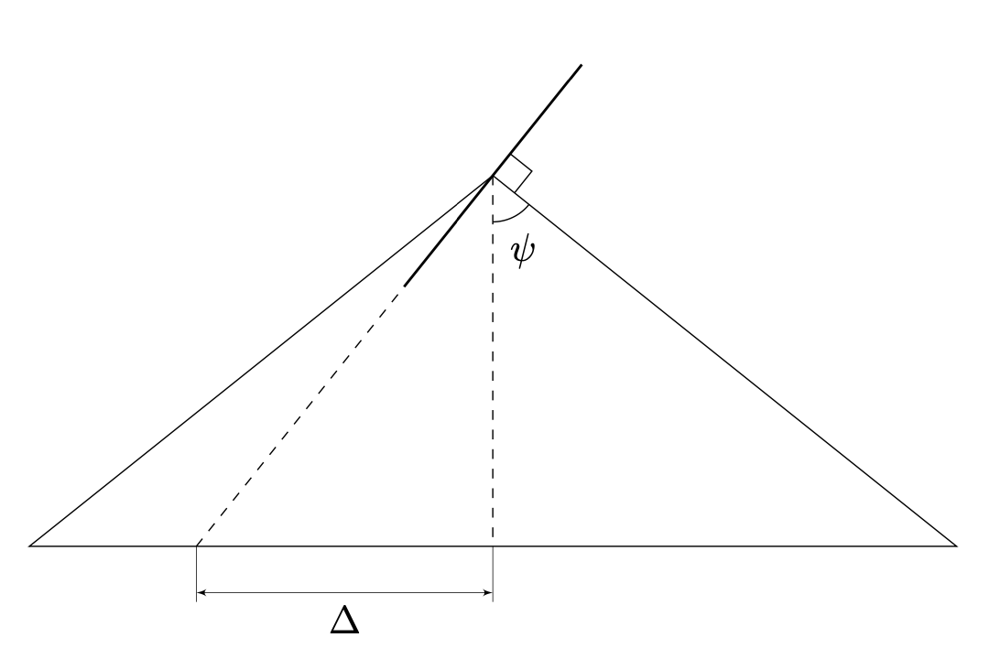
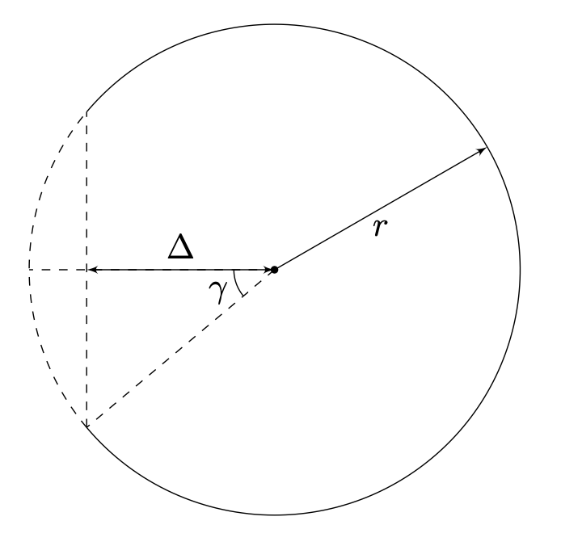
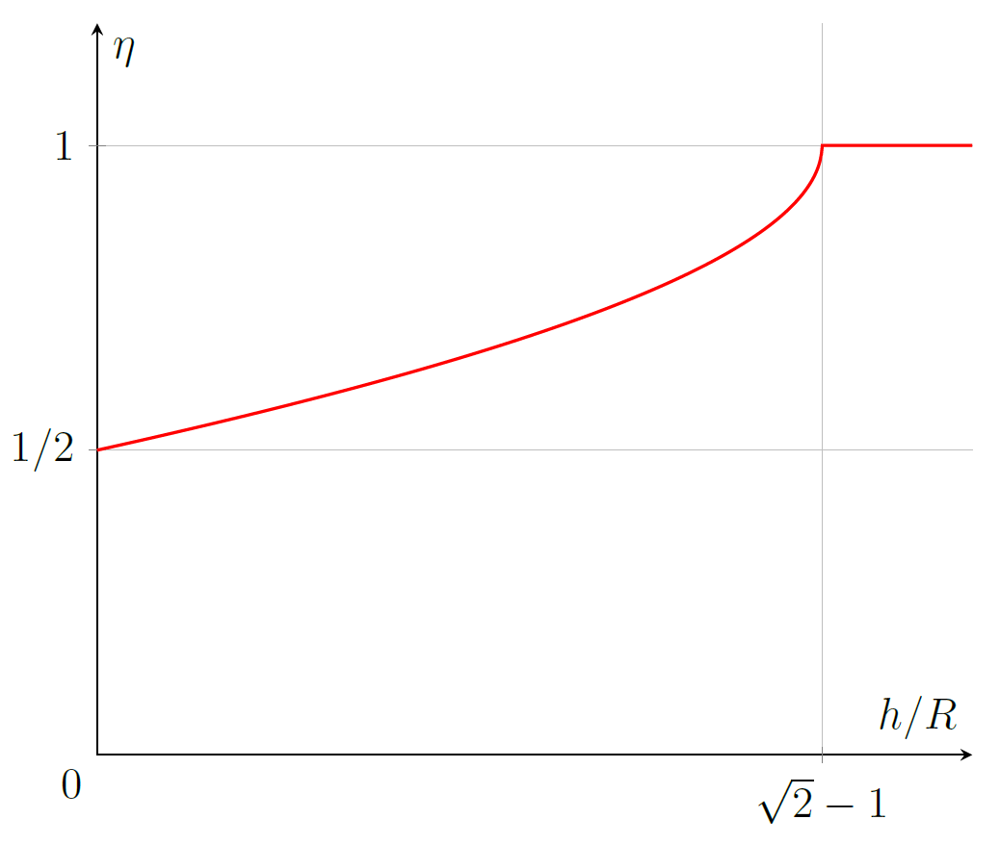
Note that the image is a conic section. In the notation of the condition $\alpha=\psi=90^\circ-\theta$. In this case, the image will be an ellipse at $\theta>90^\circ-\theta$, a parabola at $\theta=90^\circ-\theta$ and a hyperbola at $\theta<90^\circ-\theta$. Substituting $h$, we get the answer.
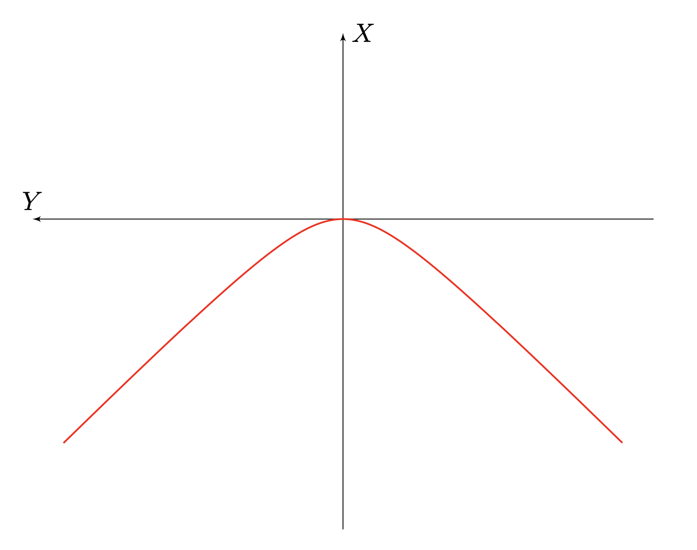
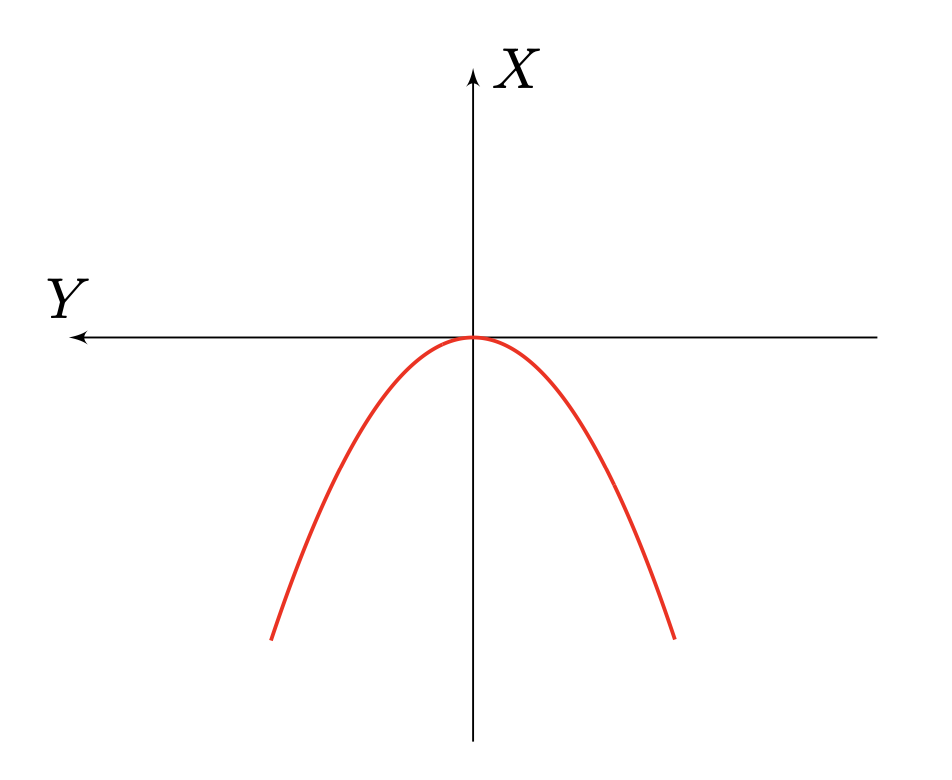
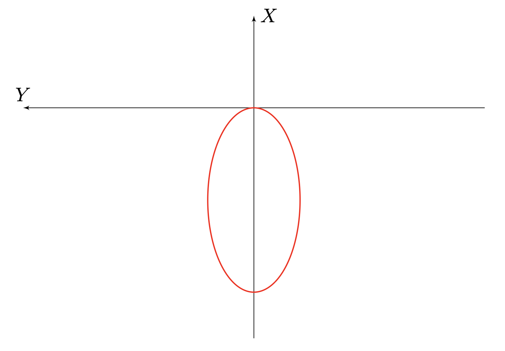